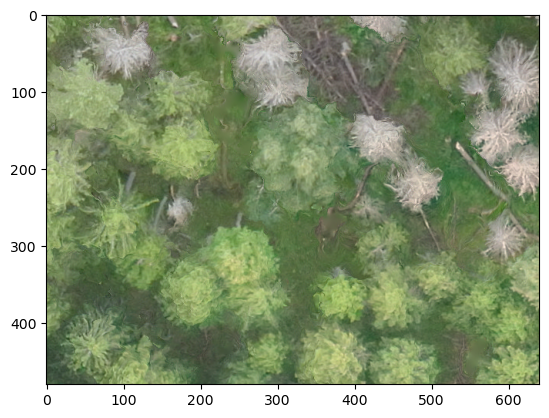
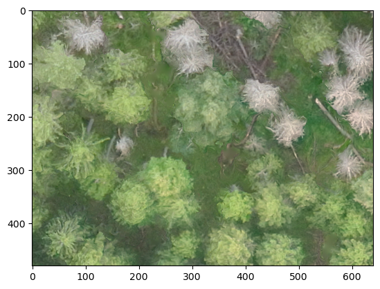
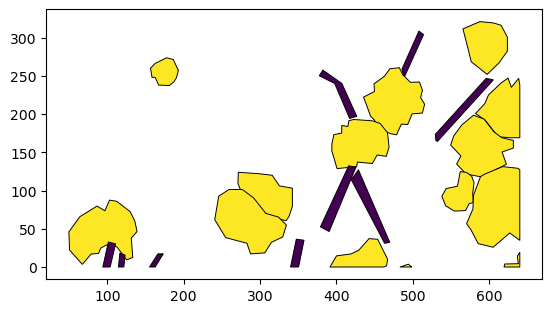
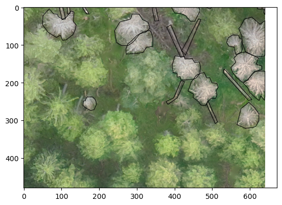
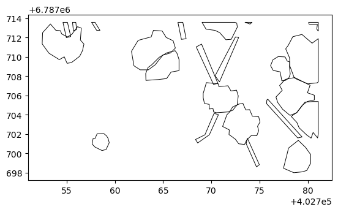

gdf = gpd.read_file('example_data/R70C21.shp')
im_path = 'example_data/R70C21.tif'
with rio.open(im_path) as im:
im_data = im.read()
plt.imshow(im_data.swapaxes(0,2).swapaxes(0,1))
plt.show()
list_to_affine (xform_mat:list)
Adapted from Solaris.geo. Creates an affine object from array-formatted list
get_geo_transform (src)
Extract geotransform for a raster image source
convert_poly_coords (geom:<function shape>, raster_src:str=None, affine_obj:affine.Affine=None, inverse:bool=False, precision=None)
Adapted from solaris. Converts georeferenced coordinates to pixel coordinates and vice versa
affine_transform_gdf (gdf:geopandas.geodataframe.GeoDataFrame, affine_obj:affine.Affine, inverse:bool=False, geom_col:str='geometry', precision:int=None)
Adapted from solaris, transforms all geometries in GeoDataFrame to pixel coordinates from Georeferced coordinates and vice versa
gdf_to_px (gdf:geopandas.geodataframe.GeoDataFrame, im_path, geom_col:str='geometry', precision:int=None, outpath=None, override_crs=False)
Adapted from https://solaris.readthedocs.io/en/latest/_modules/solaris/vector/polygon.html#geojson_to_px_gdf Converts gdf to pixel coordinates based on image in im_path
georegister_px_df (df:pandas.core.frame.DataFrame, im_path=None, affine_obj:affine.Affine=None, crs=None, geom_col:str='geometry', precision:int=None, output_path=None)
Convert geodataframe from pixel coordinates to crs, using affine_obj as the reference
gdf = gpd.read_file('example_data/R70C21.shp')
im_path = 'example_data/R70C21.tif'
with rio.open(im_path) as im:
im_data = im.read()
plt.imshow(im_data.swapaxes(0,2).swapaxes(0,1))
plt.show()
tfmd_gdf = gdf_to_px(gdf, im_path)
tfmd_gdf.plot(column='label', #facecolor='none',
edgecolor='black', lw=0.7, cmap='viridis')
Origin in lower left for this data.
fig, ax = plt.subplots()
ax.imshow(im_data.swapaxes(0,2).swapaxes(0,1))
tfmd_gdf.plot(ax=ax, column='label', facecolor='none', edgecolor='black', lw=0.7, cmap='viridis')
plt.show()
Overlaid on image coordinates are correct
tfmd_gdf = georegister_px_df(tfmd_gdf, im_path)
tfmd_gdf.plot(column='label', facecolor='none', edgecolor='black', lw=0.7, cmap='viridis')
Backwards transformation works